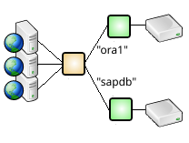

Contents
Contents  clientiplist | Query and Session Routing | usedatabase
clientiplist | Query and Session Routing | usedatabase 
clientinfolist
The clientinfolist module routes queries by matching the "client info" sent by the client against a list of regular expressions. The client info can be set using the setClientInfo() method/function provided by the native SQL Relay client API. When using PHP PDO, it can be set using the PDO_SQLRELAY_ATTR_CLIENT_INFO attribute. When using JDBC, it can be set using the setClientInfo() method of the Connection object. The client info cannot currently be set when using the ODBC, Perl DBI, PythonDB, or ADO.NET drivers.

An example configuration follows.
<?xml version="1.0"?>
<instances>
<!-- This instance maintains connections to an Oracle database. -->
<instance id="oracle" socket="/tmp/oracle.socket" dbase="oracle">
<connections>
<connection string="user=scott;password=tiger;oracle_sid=ora1"/>
</connections>
</instance>
<!-- This instance maintains connections to an SAP database. -->
<instance id="sap" socket="/tmp/sap.socket" dbase="sap">
<connections>
<connection string="sybase=/opt/sap;lang=en_US;server=SAPSERVER;user=sapuser;password=sappassword;db=sapdb;"/>
</connections>
</instance>
<!-- This instance sends one set of users to the Oracle database and
all other users to the sap database. -->
<instance id="router" dbase="router">
<auths>
<auth module="sqlrclient_userlist">
<user user="routeruser" password="routerpassword"/>
</auth>
</auths>
<routers>
<router module="clientinfolist" connectionid="oracle">
<clientinfo pattern=".*oracle.*"/>
<clientinfo pattern=".*ora1.*"/>
</router>
<router module="clientinfolist" connectionid="sap">
<clientinfo pattern=".*"/>
</router>
</routers>
<connections>
<connection connectionid="oracle" string="socket=/tmp/oracle.socket;user=scott;password=tiger"/>
<connection connectionid="sap" string="socket=/tmp/sap.socket;user=sapuser;password=sappassword"/>
</connections>
</instance>
</instances>
In this example, 3 SQL Relay instances are defined:
- one to maintain connections to an Oracle database
- one to maintain connections to a SAP database
- one to route queries to the other two instances
In this configuration, queries made by users who send client info which contains the string "oracle" or "ora1" to the connectionid "oracle", and queries made by users sending any other client info the connectionid "sap".
The string attribute in each connection tag provides the parameters necessary to connect to the other instances. Valid parameters include:
- server - the host name or IP address of the SQL Relay instance. (Despite the name, this is not a host attribute - the router connection module reads server, the same as the SQL Relay client API's own connect parameter. A connection tag that sets host instead is silently ignored.)
- port - the port of the SQL Relay instance
- socket - the socket of the SQL Relay instance, if it is running locally
- user - the user to use when connecting to the SQL Relay instance as
- password - the password to use when connecting to the SQL Relay instance
- fetchatonce - the number of rows to fetch at a time (defaults to 10, 0 means fetch the entire result set). This is read once, from whichever connection tag the router's own spawned connection process happens to be running with, and then applied to every downstream instance that process routes to. If a router instance's pool spans more than one connectionid, different sessions on the same router instance can end up using different fetchatonce values against the very same downstream target.
Contents clientiplist | Query and Session Routing | usedatabase